| 日付 | 2011年10月30日（日） |
|---|---|
| 山域 | 三浦半島 |
| メンバー | グループ（男2女3子供1） |
| 山行形態 | 子連れ日帰り |
| アクセス | 電車 |
| ルート (Map) | 津久井浜駅→三浦富士→砲台山→武山→津久井浜駅 |
久しぶりに山友達と一緒に山に行くことにする。
駅から登れる山、時間が余りかからない山、家から近い山、という条件で探すと候補は案外少ない。
子供が産まれてから初めての電車登山ということで比較的楽に登れる三浦富士に行ってみることにする。
形が富士山に似ている標高200m弱の小さな山だ。
10:01 津久井浜駅到着。標高20m。
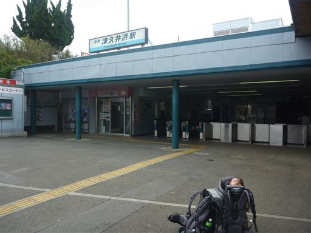
今回は駅から直接登れる山。静かな車道を歩いて山を目指す。
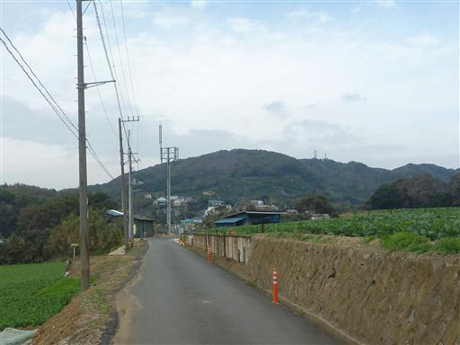
辺り一面キャベツ畑が広がっている。
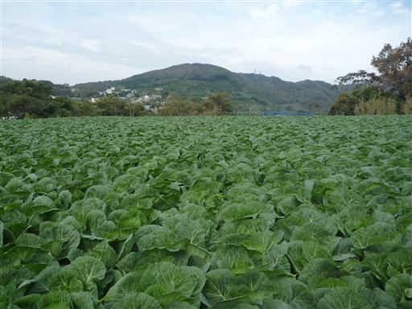
道に傾斜が出てくると、ミカン畑が広がる。
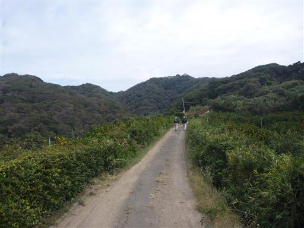
歩くこと40分ほどで山道になる。照葉樹が多く緑が濃い。
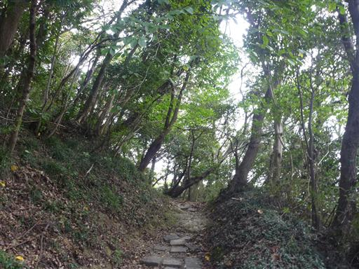
道端に立つお地蔵様。
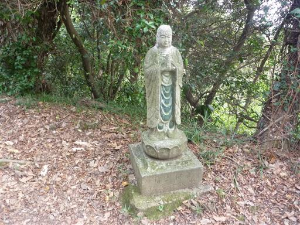
11:01 三浦富士山頂到着。標高183m。
あっという間の山頂だ。
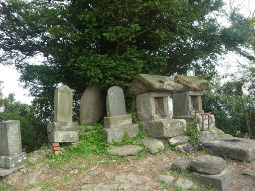
山頂からは一角の展望が広がる。
天気が良ければ青い海がきれいに見えるはずだが
残念ながら今日は曇っているので展望はあまり良くない。
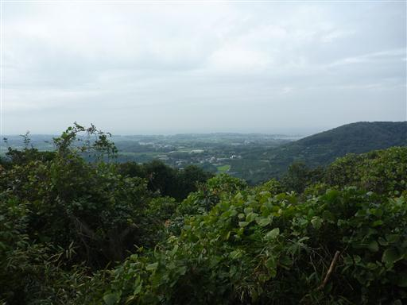
三浦富士から武山を目指して縦走路を歩く。登山道は広く整備されている。
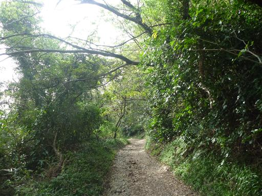
展望台に到着。ここで昼食をとることにする。
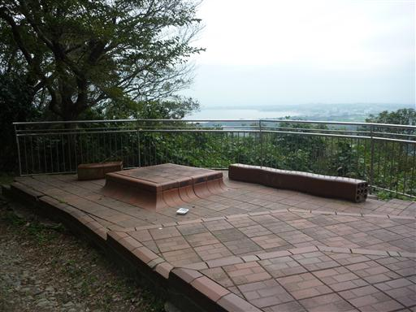
三浦半島の先端部を望むことができる。
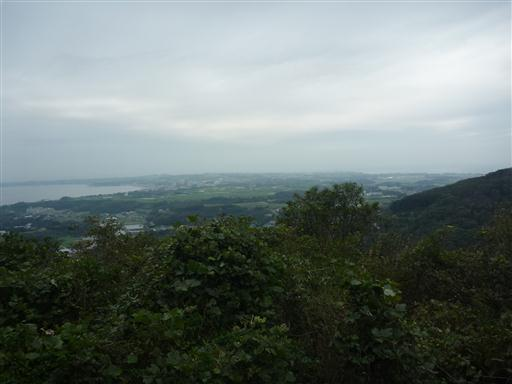
しばらく歩くと砲台山山頂に到着する。山頂には砲台の跡が残っている。
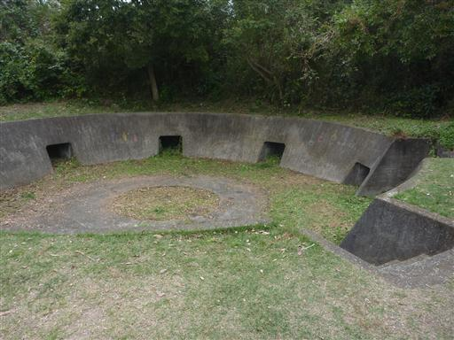
砲台山から武山を目指す道中、1匹の猫が餌を求めてすり寄ってくる。
可愛いが餌はあげずに通過する。
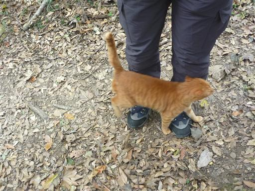
最後の武山への登りは階段が続く。短いが登りにくい階段だ。

13:08 武山山頂到着。標高200m。
展望台があるので登ってみる。なかなかの展望だ。
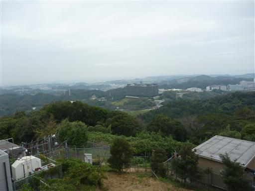
三浦富士、砲台山と歩いてきた稜線を望む。
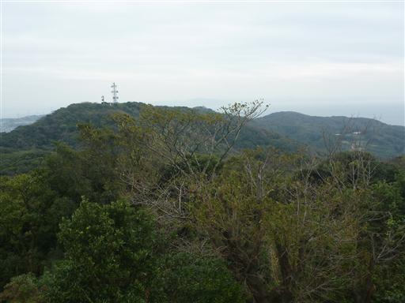
山頂に建つ武山不動尊。
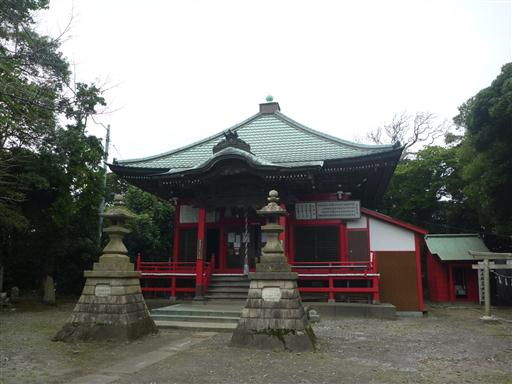
鐘をつく。比較的小振りの鐘だ。
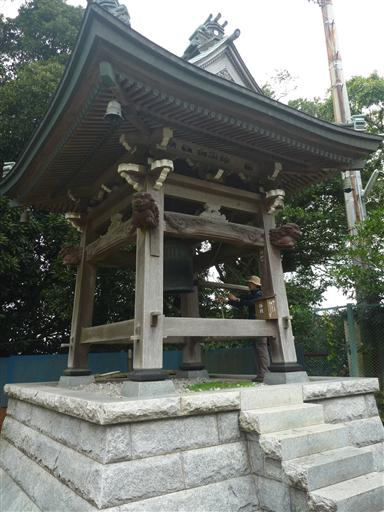
この辺りはツツジで有名なところ。なぜか季節外れのツツジが数輪咲いている。
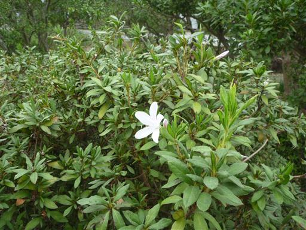
山頂で一息ついたら下山を開始する。低い山なので下山もあっという間だ。
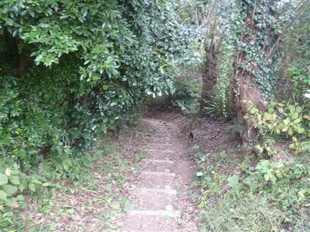
下山。少し雨がぱらついてくる。
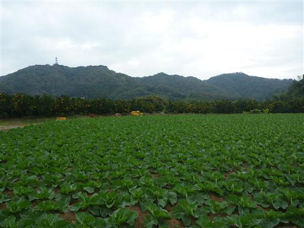
ドーム型の不思議な家が建っている。中はどうなっているのだろう？
14:30 津久井浜駅到着。
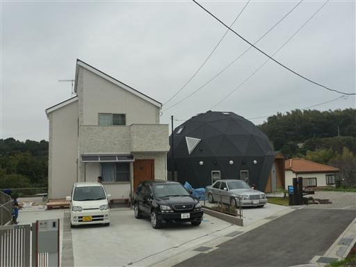